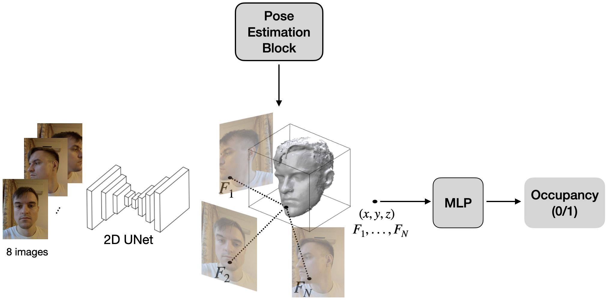

Project
In-the-wild
3D head reconstruction
A production-focused system for reconstructing face and hair geometry from unconstrained multi-view captures. The emphasis was on stable real-world behavior rather than curated lab conditions.
Overview
This work addressed 3D reconstruction of the full head, including hair, from posed image sets captured in the wild. The pipeline combined learned image features with a compact implicit model that predicted occupancy in a canonical space, while classical geometry and camera-processing components kept the solution practical and robust.
The system was designed for deployment, so the key constraint was not just visual quality but consistency across noisy inputs, changing lighting, imperfect views, and everyday mobile capture conditions.
Result
The method shipped into a product pipeline for avatar creation and supported reliable head and hair reconstruction from consumer imagery.
Patent: US Patent 11,494,963
Pipeline

BibTeX
@patent{ulianov2022methods,
title={Methods and systems for generating a resolved threedimensional (R3D) avatar},
author={Ulianov, Dmitrii and Pasechnik, Igor and Shabanov, Ahmedkhan and Lebedev, Vadim and Krotov, Ilya and Chinaev, Nikolai and Yakupov, Bulat and Poletaev, Vsevolod},
year={2022},
publisher={Google Patents},
note={US Patent 11,494,963}
}